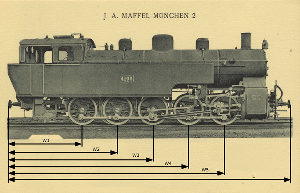

G. Trains
|
IGG ships its products mainly using cargo trains. At most sites there is
a dedicated yard for sorting wagons and loading trains. IGG owns a large
fleet of different locomotives and wagons, but their allocation
is mostly ad-hoc as no one tries to keep track of individual vehicles entering
or leaving a given site. This has to change for the audit.
| |

http://commons.wikimedia.org/wiki/File:Joseph_Anton_von_Maffei_06.jpg
|
The proper solution would be to install a unique ID tag on each locomotive
and car (an RFID tag, a bar code, etc.), however this would take too much time.
A much cheaper alternative is to install a microphone at the entrance of
the yard next to a small gap in the track and capture the noise of
the passing train. From the clicks of wheels, it is possible to
identify the type (model) of each locomotive or car the train consists of,
allowing administrators to at least keep track of the number of
different vehicle types at each site.
Wagon geometry
The
Unified Directory of Wagons, or in short
UDoW, is a
list of all locomotives and wagons ever used by IGG with a description of
the geometry for each of them. The first line of the file,
V,
is the number of vehicles on the list. Each vehicle contains the
following lines:
L N
W1
W2
...
Wn
Where
L is the length of the car in (integer),
N is the
number of spindles. Each spindle has two wheels mounted; looking from
the side, the number of visible wheels matches the number of spindles.
The rest
N lines are spindle (or wheel) offsets from the left
buffer (integer). Size units are unknown, but it is guaranteed that the
same unit is used for expressing all sizes. For example locomotive 4100
on the illustration would have the following
UDoW entry:
1927 5
505
747
989
1231
1473
Each wagon has a unique ID, an integer, determined by the place of the
wagon in the
UDoW: the first entry of
UDoW is wagon 0, the
last described wagon is
V-1.
Input
Each input is a long sound recording with multiple passing trains and
long pauses in between.
Output
Output is a text file, one train per line. Each train is a space separated
list of wagon IDs. The submission is accepted only if all trains
and all wagons are listed in the order they appeared in the input file,
with the proper
UDoW ID. For example the solution of example.wav
is:
0 7 7 7 7
0 7 7
Fine print
- trains may go from left to right or from right to left
- wagons may be asymmetrical (L-W5 != W1 on the illustration) and occur in both orientations (the locomotive on the illustration may travel from left to right or from right to left)
- each wagon geometry in the UDoW is unique (in both orientations)
- the track is straight and the length of the wagon/locomotive from buffer to buffer is exactly the same as specified in the UDoW, with 0 extra distance between the buffers of two wagons
- each spindle will cause exactly one loud click at the microphone (but the passing train may produce other clicking sounds at lower volume)
- trains passing at the microphone are travelling at a constant speed that may be different from train to train
- there might be a small amount of noise on timing or in sound (including background noises)
- all inputs were recorded by the same microphone installed on a particular track, and there are no other tracks nearby